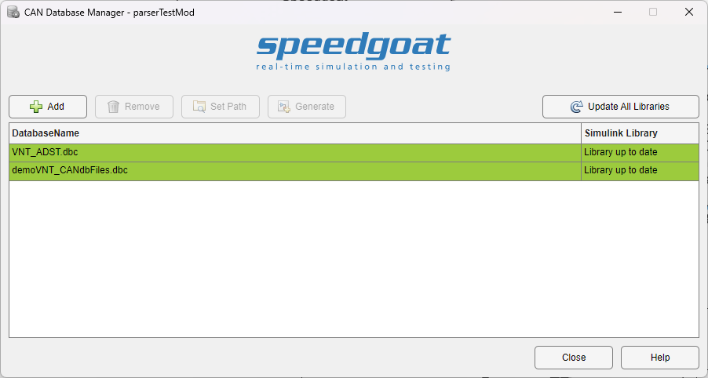
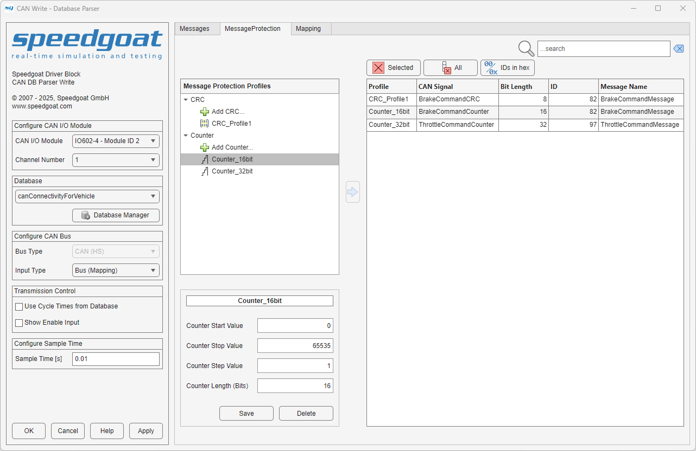
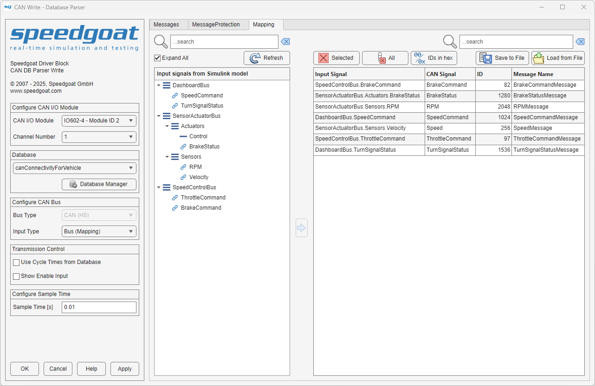

CAN Database Parser Usage Notes
CAN Database Parser Usage Notes — Usage information for parsing *.dbc files for CAN and CAN FD messaging
CAN Database Manager
The CAN Database Manager can be accessed from the CAN DB Parser Read and Write block masks. Its purpose is to create and maintain a list of *.dbc files and to generate Simulink libraries from these files. The generated libraries contain a set of preconfigured CAN/CAN FD Pack/Unpack blocks that the CAN DB Parser Read and Write blocks require to generate the subsystems. If the libraries have not been generated, the subsystem generation will fail.
As an alternative to configuring the CAN Database Manager using the application, the DB Manager Config class can be used to perform the management process programmatically.

Add: Add a *.dbc database file to the list
Remove: Remove the *.dbc database file from the list and delete the corresponding generated library
Set Path: Update the path of an existing *.dbc database file on the list
Generate: Generate the Simulink library of the currently selected *.dbc file in the list. The Simulink library will be generated in the current directory
Update All Libraries: Update and create Simulink libraries for all the list entries. If a Simulink library already exists anywhere on the MATLAB path and is up to date, the generation is skipped
The Simulink Library column in the file list indicates whether the generated library is up to date, does not exist anywhere on the MATLAB path or does not match the corresponding *.dbc file. Whenever the *.dbc file is not found in the specified path, the file list entry is highlighted red accordingly. The generated Simulink libraries must remain on the MATLAB path or, ideally, in the current directory for the following mapping process.
Messages Tab in the CAN DB Parser Write and Read Blocks
All messages defined in the selected *.dbc file are displayed in the Messages tab. Detailed information about the various signals is displayed when a specific message is selected.
The CycleTime message property is supported, provided that all cycle times are a multiple of the Sample Time parameter. To use this feature, check the Use Cycle Times from Database checkbox. If no cycle time has been defined for a message, it will default to the configured Sample Time.
Message Protection Tab in the CAN DB Parser Write and Read Blocks
The Message Protection tab allows you to create message protection profiles that can be mapped to signals defined in the selected database file. On the Messages tab, first select which messages will be transmitted or received, and then move to the Message Protection tab.

The Message Protection tab shows a tree view of custom-defined message protection profiles on the left and the mapping table on the right. The mapping table contains the list of signals that were previously selected in the Messages tab and a Profile column that shows how a message protection profile maps to a corresponding database-defined signal. To map profiles, you must select the desired message protection profile in the left-hand tree view, the corresponding row in the right-hand table, and click the arrow button to complete the mapping.
![[Note]](images/note.png) | Note |
|---|---|
Note that database-defined signals already mapped in the Mapping tab are not available when mapping a new message protection profile. |
Mapping is completed only if the bit length of the message protection profile matches the Bit Length value of the signal. For Counter message protection profiles, the bit length is given by the Counter Length (Bits) parameter value when editing the Counter profile. For provided CRC message protection profiles, the bit length value is defined by the standard (e.g., CRC8 - SAEJ1850 the bit length is 8). For custom CRC message protection profiles, the bit length value is defined by the Custom CRC Function owned by the user. A runtime error occurs if the bit length input parameter value used by the Custom CRC Function does not match the signal Bit Length value. For more detailed information on using a custom CRC algorithm, please refer to the usage notes.
The following options are available in the Message Protection tab:
Clear Selected: The message protection profile currently selected in the mapping table is set to the default value None
Clear All: All message protection profiles in the mapping table are set to the default value None
IDs in Hex: Toggle the ID display format between the decimal and hexadecimal numbering systems
Map Button (arrow icon): Maps a message protection profile to a database-defined signal. To enable the button, both a profile from the tree view and a row from the table on the right must be selected
Mapping Tab in the CAN DB Parser Write Block
The Mapping tab is enabled when the Input Type parameter is set to Bus (Mapping). The mapping functionality allows you to map the elements of an input bus signal to the signals defined in the selected database file. On the Messages tab, first select which messages will be transmitted, and then move to the Mapping tab. At this point, it is important to ensure that there is an input Simulink bus signal on the input port of the block.

The Mapping tab shows a tree view of the structure of the input Simulink bus signal on the left and the mapping table on the right. The mapping table contains the list of signals that were previously selected in the Messages tab and an Input Signal column that shows how an element of the input Simulink bus signal maps to a corresponding database-defined signal. When no mapping is selected, the input signal in the mapping table takes the default value Ground (0). To map signals, you must select the desired input signal elements in the left-hand tree view, the corresponding row in the right-hand table, and click the arrow button to complete the mapping.
| Note |
|---|---|
Note that database-defined signals already mapped in the Message Protection tab are not available when mapping an input Simulink bus signal element. |
The following options are available in the Mapping tab:
Refresh button: If the input Simulink bus signal is modified, click this button to refresh the tree view
Clear Selected: The signal currently selected in the mapping table is set to the default value Ground (0)
Clear All: All signals in the mapping table are set to the default value Ground (0)
IDs in Hex: Toggle the ID display format between the decimal and hexadecimal numbering systems
Map Button (arrow icon): Maps an input signal element to a database-defined signal. To enable the button, both a signal from the tree view and a row from the table on the right must be selected. Once a signal is mapped, the signal's icon in the tree view will change to a link
Save to File: Saves the mapping table to a file, where the filename and the file type are selectable in a dialog box. The file types currently supported are .csv and .mat
Load from File: Invokes a file selection dialog to load the mapping table from a file. The file types currently supported are .csv and .mat. The table layout of the loaded file must match the layout of the file created when you click the Save to File button. To ensure that the mapping table is valid, all the mapped messages must be enabled and all the input signals must be available in the connected input Simulink bus signal. Disabled messages will not be loaded into the mapping table (indicated by a warning message). Unavailable input signals are displayed as invalid in the mapping table